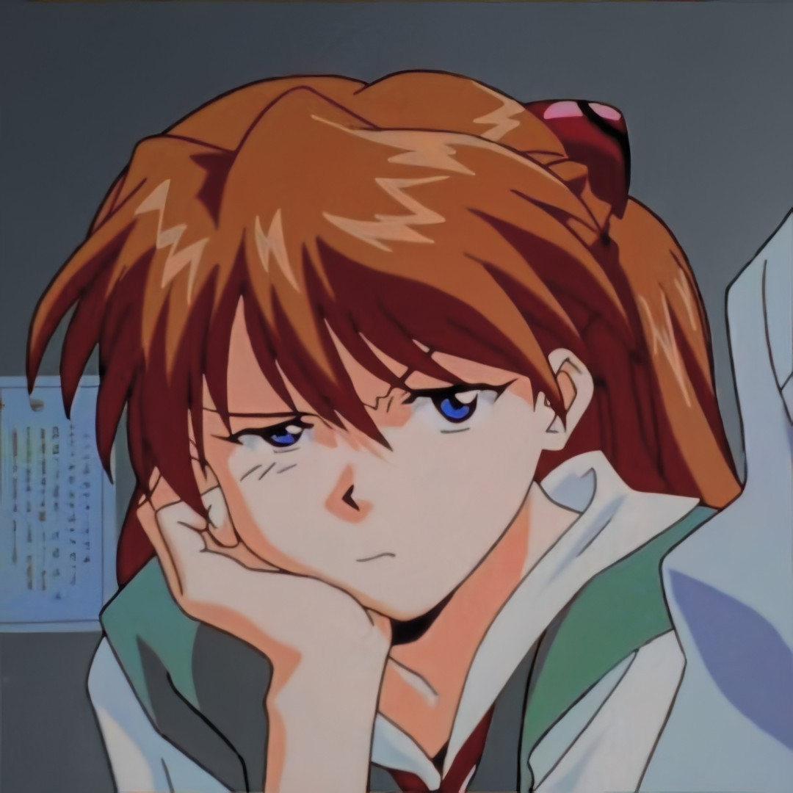
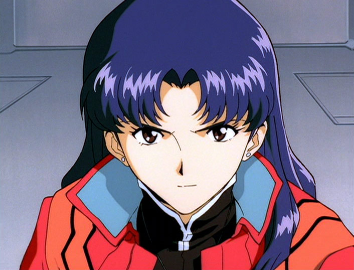

Personagens
•Shinji Ikari

Shinji Ikari é o protagonista do anime Neon Genesis Evangelion, e, subsequentemente, dos demais conteúdos relacionados a franquia. É o piloto do Evangelion Unidade 01 e definido como Terceira Criança pela NERV. A história principal é centrada em sua jornada, sua personalidade e suas relações com os demais personagens. Hideaki Anno, o criador da obra, considera Shinji como uma projeção de si mesmo.
Shinji é uma criança muito tímida, e apresenta alguns dos primeiros sintomas de depressão. Anno o descreve como "uma pessoa que se acha tão desimportante que não é capaz nem de cometer suicídio". Shinji se considera covarde e fraco, e costuma evitar interações sociais por medo de rejeição. Possui uma relação péssima com seu pai, Gendo Ikari, que o abandonou quando mais novo após a "morte" de sua mãe, Yui. Entretanto, é convocado pelo mesmo para pilotar a Unidade Evangelion 01 e derrotar o anjo que atacava a cidade de Tokyo-3 no momento, Sachiel.
•Asuka Langley

Asuka é descendente mestiça de alemães e japoneses, mas sua nacionalidade é alemã. Asuka é impetuosa, egoísta, e muitas vezes verbalmente abusiva com os outros (especialmente com Shinji), e tem uma opinião muito elevada de sua aparência e sua habilidade considerável como piloto de EVA. Ela também tem um forte desejo de independência.
Suas atitudes, porém, é uma forma de mascarar suas profundas insegurança decorrentes de sua infância traumática. Asuka é assumidamente apaixonado por Ryoji Kaji, mas também se sente atraída por Shinji, no entanto, ela não consegue expressar adequadamente seus sentimentos por ele.
•Rei Ayanami

No início da série, Rei é socialmente retraída, aparentemente sem emoção, e raramente interage com qualquer pessoa, com exceção de Gendo, a quem ela exibe inicialmente lealdade, mas com quem tem um relacionamento geralmente distante. Ela vive sozinha em um apartamento maciço escassamente mobiliado em Tokyo-3. Perto do fim da série, Shinji comenta que seu apartamento é muito semelhante ao lugar onde Ritsuko diz que Rei nasceu.
Como a série progride, ela começa a desenvolver relacionamentos com os outros e mostrar momentos de emoção genuína, até mesmo ficar triste e chorar. Sua dubladora na versão em Inglês, Amanda Winn-Lee descreve Rei em seu ditado, "Rei não é totalmente desprovida de personalidade, caso contrário, ela não seria interessante". Há uma pequena centelha de humanidade, mas é "obscurecida por este enorme sentimento de auto-estima negativa e a percepção de que ela é dispensável". A alegria de interpretar Rei está na exploração dessa pequena faísca".
•Misato Katsuragi

Misato Katsuragi é a Chefe de Operações Oficial da Nerv. Na série, ela possui inicialmente a patente de Capitã, porém, mais tarde, é promovida para Major.Ela é a Comandante de Campo dos pilotos Eva, dando ordens e estratégias durante as batalhas, assim como cuidando de alguns assuntos burocráticos em relação aos mesmos. Ela também é a tutora responsável por Shinji e Asuka, deixando-os viver em seu apartamento, em vez de deixa-los viver sozinhos.
Ela é filha de um famoso cientista, que morreu durante o Segundo Impacto salvando-lhe a vida. Por causa disso, seu objetivo é exterminar todos os Anjos, pois ela os responsabiliza pelo Segundo Impacto e pela morte de seu pai. Além disso, ela também é o mais próximo que Shinji chega de ter uma família durante a série, uma vez que Gendo, pai do menino, o rejeita constantemente.